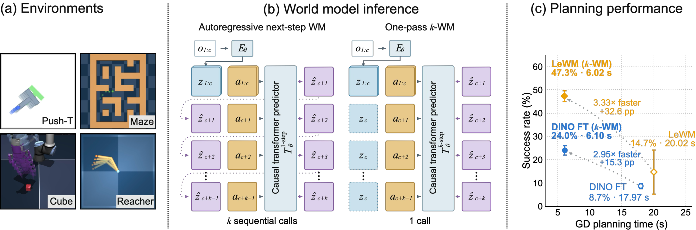
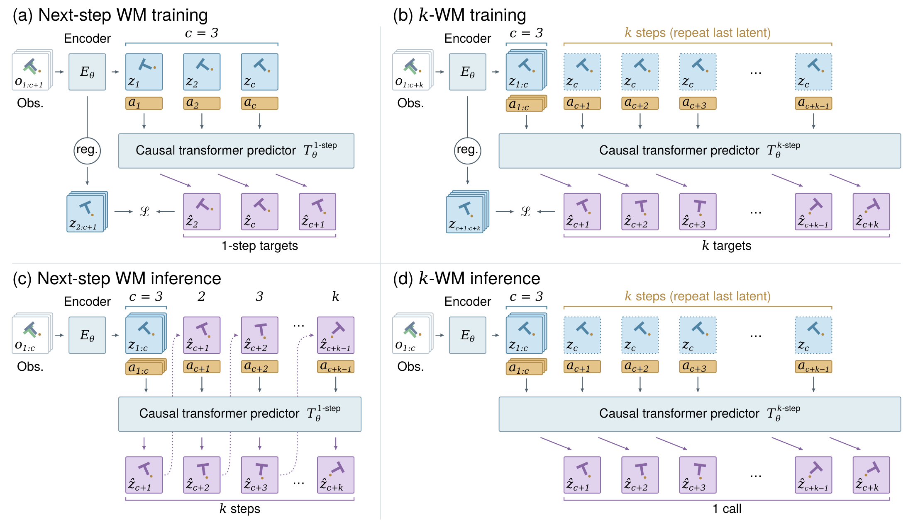
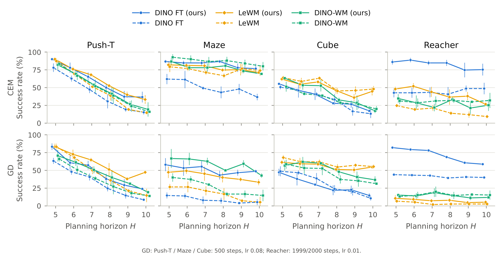
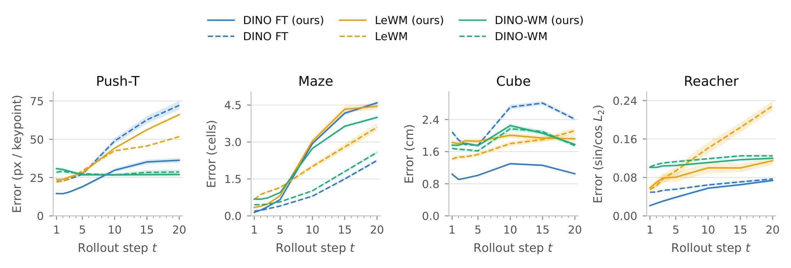
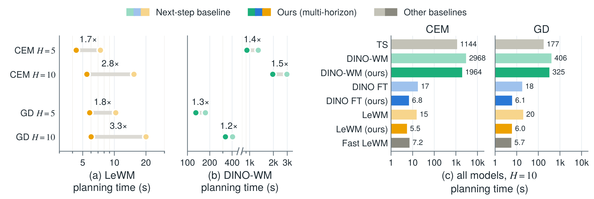
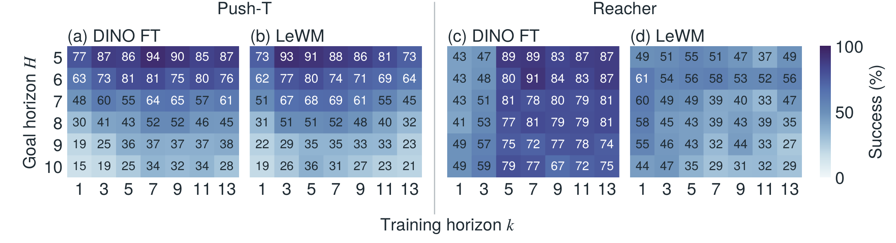
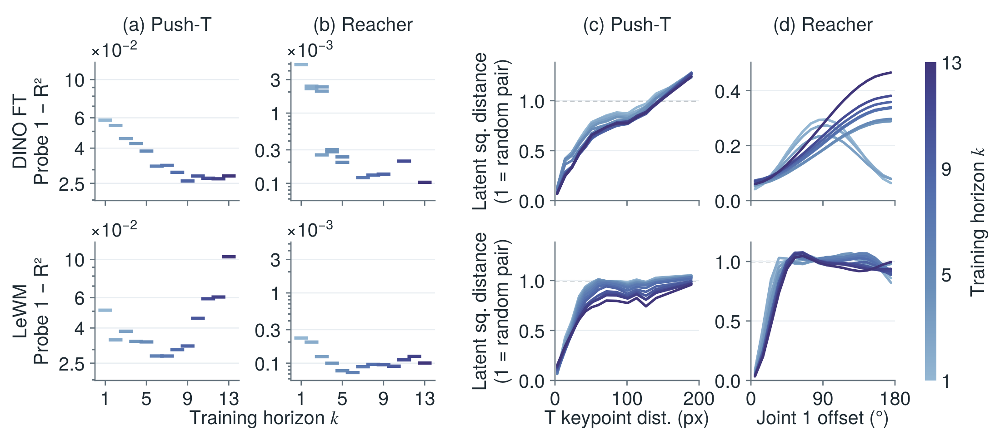

k-WM: Predicting k Steps at Once for Long-Horizon Planning with World Models
Anonymous authors · ICLR 2027 submission

Figure 1. Overview. We introduce k-WM, a minimal extension that lets a transformer-based world model predict \(k\) future latents from an action sequence in one forward pass instead of rolling out autoregressively. (a) We evaluate k-WM on four environments, Push-T, Maze, Cube, and Reacher. (b) Comparison of next-step WM and k-WM inference: the former needs \(k\) sequential predictor calls, the latter a single call over the padded input sequence. (c) Long-horizon gradient-based planning on Push-T (\(H{=}10\)): k-WM models (filled) achieve better performance and run faster than their next-step baselines (hollow), across two world model classes.
Abstract
Latent world models have become an appealing approach to visual control, enabling goal-conditioned optimization at test time and generalization across tasks with a single model. In practice, however, planning success remains limited to short horizons, and gradient-based planners driven by autoregressive rollouts still underperform sampling-based methods, despite their potential to optimize action sequences efficiently through model gradients. We hypothesize that two properties of next-step prediction contribute to these limitations: autoregressive rollouts compound prediction errors, and planning gradients must traverse a chain of nested model calls. We study a simple alternative: predicting the entire future sequence in a single forward pass. We introduce k-WM, a minimal extension to transformer-based JEPA world models: a multi-horizon training objective and input layout that let the predictor map a variable-length action sequence directly to the corresponding sequence of future latent states in a single forward pass. We apply k-WM to three classes of JEPA world models and evaluate on four environments. Overall, k-WM improves gradient-based planning by 37% and sampling-based planning by 15% over the existing next-step world models it extends. Our analysis shows that the gains cannot be explained by parallel rollout alone: improvements persist under autoregressive inference and coincide with substantial changes in the learned representation. Parallel prediction additionally reduces long-horizon inference cost. Together, k-WM offers a simple, broadly applicable path to more accurate and efficient long-horizon control.
k-WM changes only the predictor input layout and the training objective of a JEPA world model, leaving the encoder and predictor architecture unchanged.

Figure 2. Architecture. Left: standard next-step WM training with teacher forcing and autoregressive inference. Right: k-WM, which predicts multiple future latents in a single forward pass during both training and inference. In the diagram, c is the number of context latents the predictor is given (c = 3 here) and k is the number of future latents predicted: one call per step for the next-step model, one call for all k in k-WM. “reg.” is the model-specific anti-collapse regularizer on the encoder latents, and \(\mathcal{L}\) is the prediction loss between predicted and encoded target latents. Actions are concatenated with the latent tokens, and the last context latent is repeated to fill the future input positions. The inference process visualized here provides only one ground-truth frame, so the remaining history context must be bootstrapped from model predictions.
Planning results
k-WM matches or beats its next-step baseline in most settings. The gain is largest with gradient-based planning.
Multi-horizon training performs on par with or better than its matched next-step baseline across most settings, despite receiving supervision over substantially longer prediction horizons.
Method
Objective
CEM
GD
Avg. Δ
Push-T
Maze
Cube
Reacher
Push-T
Maze
Cube
Reacher
CEM
GD
k-WM vs. next-step
DINO-WM
next-step
83.3±1.2
92.7±4.2
51.3±7.0
31.3±4.6
66.0±3.5
40.0±6.0
58.7±6.4
13.3±3.1
k-WM
82.0±6.9
86.7±5.0
63.3±1.2
32.0±5.3
70.7±8.1
66.7±13.3
56.7±7.0
18.7±3.1
+1.3
+8.7
DINO FT
next-step
78.0±6.0
62.0±7.2
50.7±3.1
42.7±6.4
63.3±4.2
14.7±4.2
48.7±7.0
44.0±2.0
k-WM
90.0±2.0
86.7±2.3
55.3±1.2
86.0†±3.5
83.3±4.6
58.0±9.2
47.3±5.0
82.0†±5.3
+21.2
+25.0
LeWM (concat)
next-step
73.3±5.8
89.3±2.0
49.3±2.5
49.3±5.7
74.7±4.2
17.3±5.0
48.7±6.4
10.7±4.1
k-WM
90.0±0.0
82.0±5.3
62.0±3.5
48.0±4.0
83.3±4.2
47.3±8.1
61.3±3.1
10.7±5.0
+5.3
+12.8
Prior world models
LeWM (AdaLN)
87.3±5.0
79.3±9.2
64.0±3.5
24.7±3.1
83.3±4.2
26.7±4.2
68.0±3.5
6.7±3.1
Fast LeWM
86.7±4.1
79.3±4.2
58.0±9.2
17.3±3.1
88.0±5.3
60.0±0.0
60.7±5.0
6.7±3.1
Straightening
85.3±8.3
81.3±4.2
67.3±6.1
8.0±3.5
87.3±2.3
69.3±4.2
74.7±1.2
6.0±2.0
Table 1. Short-horizon planning (\(H{=}5\)). Success rate (%) with CEM and gradient descent (GD), mean ± std over 3 seeds × 50 episodes. Top: each world model class with k-WM (shaded) against its next-step version with the same encoder, predictor and training recipe. Bottom: prior world models, re-run with the same planning protocol. Bold: better of each pair; pink: best in the column; †: k-WM model rolled out autoregressively (see Analysis). Avg. Δ: k-WM minus next-step, averaged over environments from unrounded success counts.
DINO FT maintains an overall advantage over its next-step counterpart, and multi-horizon LeWM shows a growing advantage over the original AdaLN LeWM as the horizon increases.

Figure 3. Long-horizon planning. Success rate as a function of planning horizon \(H \in \{5,\dots,10\}\) across four environments, using CEM (top) and gradient-based planning (bottom). Solid lines denote k-WM models; dashed lines denote next-step baselines. DINO FT and DINO-WM use the same encoder and predictor architectures within each pair; the LeWM baseline uses the original AdaLN predictor. Curves show mean success rates; error bars show ± std over 3 seeds. Reacher rollout uses \(d=1\).
k-WM rollouts are sometimes more accurate, but this does not explain all of the planning gain.

Figure 4. Open-loop rollout error. Error between the ground-truth states and states decoded by a linear probe from the predicted latent, vs. rollout step, on validation trajectories (lower is better). Solid: k-WM models rolled out with the largest chunk size; dashed: next-step baselines. The probe is fit per encoder on its training latents. Band: ±1 standard error over 488 windows for Push-T and 1000 windows for the other environments.
Fewer sequential predictor calls make planning up to 3.3× faster for long-horizon GD.

Figure 5. Planning speed on Push-T. Planning time is measured in seconds, with compile and bf16, on one L40S. CEM optimizes with 300 samples and 30 iterations; GD optimizes for 500 steps. (a), (b): Speed-up of k-WM over the next-step baseline. (c): Planning time across different models, including Temporal Straightening (TS) and Fast LeWM (Appendix D); x-axis is on a logarithmic scale.
Planning performance changes systematically as the prediction horizon increases, and different world model classes and planners exhibit different sensitivities to this choice.

Figure 6. Training horizon vs. goal horizon. Planning success rate (%) as a function of the training sequence length (columns) and the planning goal horizon \(H\) (rows), for DINO FT and LeWM on Push-T and Reacher, with CEM. Mean over 3 planning seeds × 50 episodes.
Separating multi-horizon training from parallel inference
Autoregressively trained models also beat the next-step baseline in some settings, so parallel rollout alone does not explain the gain. The effect of chunk length depends on the task and planner.
Environment
Planner
Rollout chunk length
AR training window
Next-step
1
2
4
6
10
3
Push-T
CEM
47.0±9.5
52.7±9.5
56.0±5.3
50.0±5.3
48.7±8.3
46.0±8.7
30.7±9.9
GD
44.7±2.3
50.7±3.1
53.3±9.0
38.0±7.2
46.7±10.3
46.7±6.4
24.7±4.2
Reacher
CEM
84.7±4.2
80.7±5.0
77.3±7.6
72.0±2.0
76.0±2.0
58.0±9.2
40.7±10.1
GD
68.7±1.2
12.7±2.3
22.0±5.3
60.7±1.2
51.3±13.3
22.0±2.0
39.3±6.4
Table 2. Rollout and training ablation. Planning success rate (%, ↑) of DINO FT at \(H{=}8\) when varying the inference chunk length \(d\) or autoregressive (AR) training window, mean ± std over 3 seeds. All models except the next-step baseline are trained with \(k=8\); the AR models are trained over the full 10-step rollout window (10) or with a three-token sliding window (3). Bold: highest mean per row.
What the multi-horizon objective teaches the encoder
Ground-truth state becomes increasingly linearly decodable as the training horizon grows on both Push-T and Reacher. Latent distance also tracks distance in state more faithfully with a longer training horizon, gradually on Push-T and through a sharp transition on Reacher.

Figure 7. State alignment of the DINO FT (top) and LeWM (bottom) latents vs. training horizon. (a, b) Fraction of the ground-truth state variance that cannot be explained by a linear probe from the latent representation (\(1-R^2\), Push-T states: T keypoints, Reacher states: arm pose), with one dash per trained model. (c, d) Latent squared distance, normalized such that the expected distance between a random pair of frames is 1, versus ground-truth state distance for pairs of frames matched on the remaining state variables (agent position on Push-T, second joint on Reacher). Darker curves indicate longer training horizons.